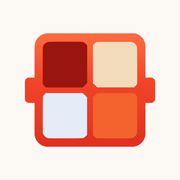

아, 소스 뭐 먹지?
오늘 먹을 소스를 가챠로 뽑아보세요
레시피 0개
전골 0개
전국 0곳
다녀온 하이디라오 매장 0곳
지금 나가면 입력한 내용이 사라져요.
재료를 골라주세요
재료를 담아주세요
* 필수 입력
소스 이미지가 있나요?*
「아니오」를 선택하면 기본 이미지가 보여요
어떤 이름이 좋을까요?*
소스를 키워드로 표현해주세요(최대 5개)*
나만의 팁이 있나요?
소스바
이대로 만들까요?
길게 눌러 저장하세요
사진 맞추기
끌어서 옮기고, 손가락 두 개로 벌려 크게 볼 수 있어요
언제 다녀오셨어요?*
어느 매장에 다녀오셨어요?*
누구와 함께 다녀오셨어요?
기억하고 싶은 게 있나요?
내 코드
이 코드가 있으면 어디서든 데이터를 불러올 수 있어요.코드를 아는 사람은 내 데이터를 볼 수 있으니 절대 공유하지 마세요.
코드를 입력하여 데이터 불러오기
데이터에는 내 메뉴, 스티커, 즐겨찾기, 좋아요, 내 소스가 포함되어 있어요코드를 불러오면 데이터 중 내 메뉴는 더 최근에 담은 것만 남고,스티커, 즐겨찾기, 좋아요, 내 소스는 지워지지 않고 모두 남아요내 소스에 넣은 이미지는 이 기기에만 저장돼요

하루에 한 번만 뽑을 수 있어요
내일 또 만나요